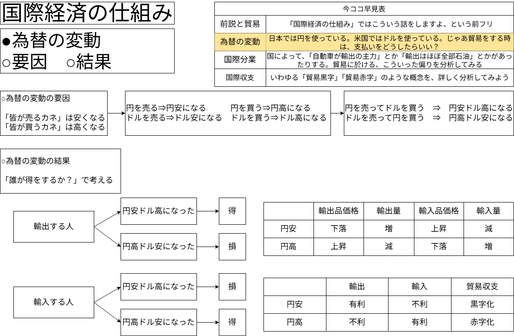
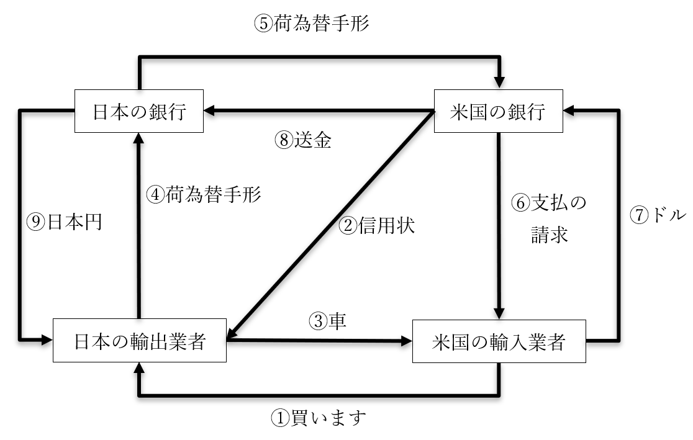
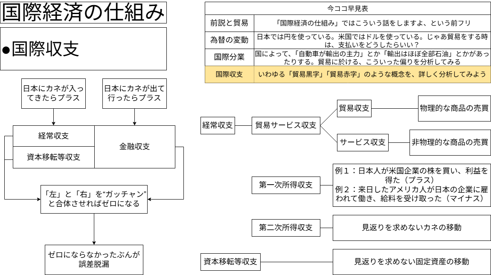

国際経済の仕組み
●授業動画一覧＆問題集リンク
| 問題集 | ウェブサイト | |
|---|---|---|
| 為替の変動1／概要 | YouTube | ニコニコ動画 |
| 為替の変動2／要因1 | YouTube | ニコニコ動画 |
| 為替の変動3／要因2 | YouTube | ニコニコ動画 |
| 為替の変動4／結果1 | YouTube | ニコニコ動画 |
| 為替の変動5／結果2 | YouTube | ニコニコ動画 |
| 貿易取引の仕組 | YouTube | ニコニコ動画 |
| 国際分業 | YouTube | ニコニコ動画 |
| 国際収支1 | YouTube | ニコニコ動画 |
| 国際収支2 | YouTube | ニコニコ動画 |
●前説と貿易
・国際経済は、主に、以下の二つの積み重ねである
１：実体経済
⇒例えば、「日本で作った自動車を、アメリカ人に売る」「アメリカで採れた石油を、日本人に売る」
２：金融経済
⇒例えば、「日本の銀行が米企業にカネを貸す」「アメリカ人投資家が日本企業の株を買う」
・この内、高校の公共や政治経済で主に扱うのは１となる
⇒実体経済の例はどちらも、国境を跨いでモノ・サービスを売り買いする行為である。そういう行為を一般に、「貿易」と呼んでいる。そう、公共や政治経済の「国際経済の仕組み」八割がたは、「貿易の仕組み」である
・そういう訳で、この「国際経済の仕組み」では、主に貿易を扱う
⇒貿易、ひいては（実体経済という意味での）国際経済の仕組みを理解する為に、以下のような順番で学習を進めていこう
| 単元 | 概要 |
|---|---|
| 前説と貿易 | 「国際経済の仕組み」ではこういう話をしますよ、という前フリ ※今ココ |
| 為替の変動 | 日本では円を使っている。米国ではドルを使っている。じゃあ貿易をする時は、支払いをどうしたらいい？ |
| 国際分業 | 国によって、「自動車が輸出の主力」とか「輸出はほぼ全部石油」とかがあったりする。貿易に於ける、こういった偏りを分析してみる |
| 国際収支 | いわゆる「貿易黒字」「貿易赤字」のような概念を、詳しく分析してみよう |
●為替の変動
○概要
▽為替の二つの意味
・「前説と貿易」で見たように、公共や政治経済が対象とする「国際経済」は、基本、「貿易」である
・では、貿易を行う際、支払いはどのように行われているのだろうか？
・この問いに対する答えは単純で、通貨を交換すればよいのである
⇒以下で、日本で作った自動車を、アメリカ人に売る…という形で考えてみよう
前提１：日本の企業は、自動車の代金を円で受け取りたい（ドルで受け取っても仕方ない）
前提２：アメリカ人は、普段からドルを使って生活しているので、円を持っていない
具体的な行動：アメリカ人が持っているドルを円と交換し、円で自動車の代金を払う
・このような、「異なる二国間の通貨を交換する」行為を【為替】と呼ぶ
⇒為替という言葉は、「経済分野第一章／金融政策と銀行」でも出てきた通り、大まかに分けて二つの意味がある
１：「現金以外の方法で決済を行う」ものの総称
２：異なる二国間の通貨を交換する
・国際経済の時に出てくる「為替」という言葉は、大抵、２の意味で使われる事になる
⇒２の意味の「為替」を、外国為替と呼ぶ事もある。逆に、「コンビニのおにぎりを、Suicaで買う」ような場合は１の意味になる訳だが、このような場合の「為替」を内国為替と呼ぶ事もある
・ところで、「外国為替」となると、ひとつ問題が出てくる。比率（レート）をどうするかである
⇒先の「コンビニのおにぎりを、Suicaで買う」であれば、「Suicaに入っている1円」と「現金の1円」をイコールと考えて決済（支払い）すればよい。が、外国為替の場合は…「1円」と「1ドル」では全然価値が違うのである
※例えば、令和七年現在の、マクドナルドのビッグマックの値段を比べてみよう。アメリカ合衆国だと5.79ドル、日本国では480円。「1円」と「1ドル」では全然価値が違う、というのが分かって貰えるだろう
・そういう訳で、外国為替をやる場合は、二つの通貨の交換比率を定める必要がある
⇒ここで言う「交換比率」とは、例えば1ドル100円とか、1ユーロ100円とか、そういうものである。この比率を、【外国為替相場】と呼んでいる
※この外国為替相場、色んな呼び方があるので注意してほしい。「外国為替レート」「為替相場」「為替レート」みたいな感じで…
▽固定為替と変動為替
・さて、外国為替相場には、大きく分けて二種類ある
・相場がずっと変わらない【固定為替相場制】、日々変わる【変動為替相場制】である
※これも「固定相場制」とか「変動相場制」とか言ったり、更に縮めて「固定為替」「変動為替」と言ったりと、色々な呼び方がある。注意してほしい
・この二つの外国為替相場は、戦後日本の歴史を例に理解すると分かりやすいだろう
・終戦直後の1949年から1973年まで、日本国は【固定】為替相場制であった
⇒この間、円の外国為替相場はずっと【1】ドル【360】円であった。1950年も、1951年も、1952年も、1960年も、1970年も…いつ円をドルに交換しようとしても、必ず、「360円払えば1ドル貰えるよ」「1ドル払えば360円貰えるよ」という形であった
・一方、1973年以降の日本国は、【変動】為替相場制である
⇒現代日本でもニュースを見ると、「本日の為替の値動きは、×円安くなりまして、×ドル×円です」というような事を言っている筈である。変動為替相場制では、毎日…何なら毎分毎秒、リアルタイムに外国為替相場が変化するのである
▽外国為替相場と円安円高
・「外国為替相場が日々変わるのが変動為替相場制である」と言われても、イメージしづらいだろう
・そこで、日本国の通貨たる円を例に、為替相場が変動するとどうなるかを見てみよう
・まず、一般に、ある通貨の価値が高くなる事を「ナントカ高」、低くなる事を「ナントカ安」と呼ぶ
⇒日本円で言えば、日本円の価値が高くなったのであれば【円高】、低くなったのであれば【円安】である
| 元の円ドル相場 | 変化後その１ | 変化後その２ |
|---|---|---|
| 1ドル100円 | 1ドル50円 | 1ドル200円 |
・例えば、元々は1ドル100円だったとする
⇒つまり、1ドルと100円を交換できる。言い方を変えれば、1ドル払えば100円を買えるし、100円を払えば1ドルを買える
・ここから、円とドルの為替相場が1ドル50円、もしくは1ドル200円になった場合を考えてみよう
変化その１：1ドル100円 ⇒ 1ドル50円
⇒元は100円で1ドルを買えた
⇒変化後は、1ドル買うのに50円でいい。100円もあれば、2ドルも買えてしまう
⇒という事は、円の価値が高くなっている
⇒よってこれは円高（ドル安）である
変化その２：1ドル100円 ⇒ 1ドル200円
⇒元は100円で1ドルを買えた
⇒変化後は、100円では1ドル買えない。1ドル買うには、200円、つまり今までの二倍の日本円が必要
⇒という事は、円の価値が低くなっている
⇒よってこれは円安（ドル高）である
| 元の円ドル相場 | 円高ドル安例 | 円安ドル高例 |
|---|---|---|
| 1ドル100円 | 1ドル50円 | 1ドル200円 |
・このように、外国為替相場というのは「片方が上がったら片方が下がる」ものである
⇒この辺はインフレ／デフレと同じである。インフレ／デフレも、物価が上がったら貨幣価値が下がるし、貨幣価値が上がったら物価が下がる。以下で、ジュースの値段を例に考えてみよう
| 元のジュースの値段 | 変化後の値段 | これって要するに… | つまりは… | |
|---|---|---|---|---|
| 変化その１ | 1本100円 | 1本200円 | 物価上昇、貨幣価値下落 | インフレ |
| 変化その２ | 1本100円 | 1本50円 | 物価下落、貨幣価値上昇 | デフレ |
▽「為替の変動」の「概要」の板書

▽例題
次の為替相場の変化について、「円高ドル安」か「円安ドル高」かを答えよ。
（1）1ドル＝120円 → 1ドル＝90円
（2）1ドル＝80円 → 1ドル＝150円
▽例題 解説
・正解は(1)が「円高ドル安」、(2)が「円安ドル高」である
1ドル×××円の「×××円」の部分が増えてるから円高！ …とならないように注意！
・板書に書いたここをゆめゆめ忘れぬようにお願いしたい
・「外国為替相場と円安円高」でやった、円高と円安の基本的な考え方を練習しておこう
⇒例えば(2)は、「元は1ドル買うのにたった80円でよかった」「相場の変化後は、1ドル買うのにも150円も必要になってしまった」と考えれば、円の価値が下がっている、即ち円安ドル高であると分かる筈である
○為替の変動の要因
▽前説
・既に、現代の円相場は変動するものだと述べた。ここで疑問が二つ出てくる
１：何故変動するのか？
２：変動するとどうなるのか？
・まずは１の「何故変動するのか？」を見ていこう
▽変動要因の基本的な考え方
・為替が変動する要因は色々あるが、基本的な考え方はインフレ／デフレと同じである
⇒まず、インフレを例にとって、インフレとはどういう現象か考えてみよう
・インフレは、「物価上昇、貨幣価値下落」「需要過剰、供給過少」である
⇒つまり、「商品の需要に対して供給が少なすぎる」だと、物価が上がる
⇒もう少し噛み砕いて言うと、「皆が買いたいと思っているのに全然流通していない商品」は値段が上がる
⇒もっとざっくり言ってしまえば、「皆が買いたいと思う商品」「皆が買う商品」は価値が上がる
・上記インフレの例を通貨に置き換えてみよう。例として、円とドルを使用する
・円高ドル安は、「円の価値上昇、ドルの価値下落」「円の需要過剰、円の供給過少」である
⇒「皆がドルで円を買いたいと思っていれば、円の価値は上がる」
⇒もっと言えば、皆が【ドルを売って円を買う】形でドルと円を交換すると、円の価値は上がる
・デフレと円安ドル高であれば、上記の例の逆を考えればよい
・デフレ（物価下落）は、「皆が要らないと思う商品」「皆が売る商品」に起こる
・同様に円安ドル高は、皆が【円を売ってドルを買う】形で円とドルを交換すると発生する
| 現象 | 起こる条件 |
|---|---|
| 円高ドル安 | ・皆が「円が欲しい」「ドルは要らない」と思っている ・皆が「ドルを売って円を買う」をしている |
| 円安ドル高 | ・皆が「ドルが欲しい」「円は要らない」と思っている ・皆が「円を売ってドルを買う」をしている |
・実際のところ、為替が変動する要因は沢山ある
⇒例えば「その国の金利が上がった・下がった」とか、「その国が貿易黒字・赤字になった」とかである
・しかし実際には、為替の変動の要因は全て、上記の表の話に還元できるのである
⇒この後、実際に例題を解きながら確認してみよう
▽例題１
日本の金利が全体的に上がった一方、アメリカ合衆国の金利はそのまま…という状況を想定する。他の条件は一定とした場合、この状況は円安ドル高へ誘導する圧力として機能するか、円高ドル安に誘導する圧力として機能するか、答えよ。
※金利とは即ち、利子である。以下のようなものを指す
例１：「あなたに100万円貸します」「5年後、110万円にして返してください」という場合、金利（利子）は10%である
例２：「この券を持っている人は、10年後、101万円を受け取れます」と書かれた国債を100万円で売る…という場合、金利（利子）は1%である
▽例題１ 解説
正解：円高ドル安へ誘導する圧力
・問題文の例２で考えてみよう
「この券を持っている人は、10年後、101万円を受け取れます」と書かれた国債を100万円で売る
・これは日本の金利が1%の場合の国債である。仮に、金利が10%に上がったとしよう。すると…
「この券を持っている人は、10年後、110万円を受け取れます」と書かれた国債を100万円で売る
・こう↑なる筈である。こうなった場合、世界中の人が「日本の国債を買いたい！」となるだろう
・ところで、日本の国債は基本的に、日本円でないと買えない
⇒金利10%の例で言えば、国債を買う時に使うのは1万円札100枚、10年後受け取れるのは1万円札110枚。国債を買う時も、払い戻しを受ける時も、日本円である
・ところが、外国人は普段、日本円を使っていない
⇒例えばアメリカ人は、普段米ドルを使って生活しており、日本円は持っていない。故に、アメリカ人が「金利上がったし、日本の国債を買いたい！」と言うのなら、「ドルを売って円を買う」が必要である
・「ドルを売って円を買う」で起きる現象は円高ドル安である。よって、正解は「円高ドル安」となる
※尚、当然の事ではあるが、アメリカ人なら「ドルで円を買う」し、EUの人なら「ユーロで円を買う」し、イギリス人なら「ポンドで円を買う」。この例題１は元々、円ドル相場がどうなるかを聞く問題だったので、「ドルで円を買う」という話になっている
▽例題２
日本が貿易黒字になったとする。他の条件は一定とした場合、この現象は円高へ誘導する圧力として機能するか、円安へ誘導する圧力として機能するか、答えよ。
▽例題２ 解説
正解：円高へ誘導する圧力
・例えば、日本国が米国に対し、大幅な貿易黒字だとする
⇒日本からは大量の商品が米国へ輸出され、アメリカ人はその代金を支払う事になる
・ところで、日本の輸出企業は、代金として日本円しか受け取らない
⇒当たり前である。日本人も日本企業も円を使っている訳で…ドルを貰っても仕方ない
・仕方ないので、アメリカ人は「ドルを売って円を買う」をして円を用意し、代金を支払う
⇒「ドルを売って円を買う」をするという事は…そう、円高ドル安へと動いていく筈である
※実際の貿易では、アメリカ人が換金所へ行って「ドルを売って円を買う」をやって、その上で代金を円で払う…という事はあまりない。読者諸君もAmazonやSHEINで外国産の商品を買った事はあると思うが、わざわざ換金所に出向いた事はない筈である。実際の貿易では、銀行が間に入って、消費者（商品を買った人）が知らない間に勝手に換金してくれる…というのが基本なのだ。とは言え、結局は「アメリカ人が日本の商品を買うには、ドルを売って円を買うという行為が必要」というのに変わりはない
▽例題３
日本に来る海外からの旅行客が減ったとする。他の条件は一定とした場合、この現象は円高へ誘導する圧力として機能するか、円安へ誘導する圧力として機能するか、答えよ。
▽例題３ 解説
正解：円安へ誘導する圧力
・当然の話だが、日本人は日本円を、アメリカ人はドルを、イギリス人はポンドを、普段使っている
⇒言い方を変えれば、日本人は普通、ドルやポンドを持っていない。同様にアメリカ人は普通、日本円やポンドを持っていない
・しかし何人であろうと日本へ来たのであれば、日本円がなければ何もできない
⇒だから日本に来た旅行者は、「円を買う」が必要である。例えばアメリカ人であれば、「ドルを売って円を買う」をしなければ、成田国際空港からホテルへ移動するタクシーの代金も払えない
日本に来る海外からの旅行客が減ったとする
・今回の想定は↑である。つまり、「円を買う」をしなければならない旅行客が減ったのである
⇒今までに比べ、「ドルを売って円を買う」や「ポンドを売って円を買う」が減った訳である。これは言い方を変えれば、今までの円高誘導圧が弱まった、という事である。「円高誘導圧が弱まる」の言い方を変えれば、「円安誘導圧になる」になるだろう
・よって、「海外からの旅行客が減る」は「円安へ誘導する圧力」として機能する筈である
▽例題４
海外から日本への投資が減った、とする。他の条件は一定とした場合、この現象は円高へ誘導する圧力として機能するか、円安へ誘導する圧力として機能するか、答えよ。
▽例題４ 解説
正解：円安へ誘導する圧力
・例えばアメリカ人の投資家が日本企業の株を買ったとする。これは「海外から日本への投資」である
⇒他にも、外国人が日本に工場を作ったり、ホテルを作ったり、そういうのも「海外から日本への投資」である
・海外から日本へ投資する場合、日本円が必要である
⇒日本企業の株は日本円でなければ買えないし、「外国人が日本に工場を作る」のだって、日本円が必要である。日本円を払って日本の土地を買い、日本円で日本の建設会社を雇い…としなければ、日本に工場は作れない
・が、ここまで何でも確認してきた通り、外国人は基本、日本円を持っていない
⇒例えばアメリカ人が日本へ投資するとなったら、「ドルを売って円を買う」をしなければならない
海外から日本への投資が減った、とする
・今回の想定は↑である
⇒つまり、「海外から日本への投資」という「円を買う」が必要な行動が減ったのである。これは例題３と似たような話で、今までに比べ、「外国人が自国通貨を売って円を買う」が減ってしまい、今までの円高誘導圧が弱まった…という事になる
・例題３で見た通り、「円高誘導圧が弱まる」の言い方を変えれば、「円安誘導圧になる」となる
▽例題５
世界の人々から、日本は「流石は三十年不況でもずっとGDP世界三位だった経済大国やね、日本経済は強いわ」と思われているとする。一方で、アメリカ合衆国では共和党支持者と民主党支持者の対立が極限に達し、ついに内戦が勃発したとする。他の条件は一定とした場合、この状況は、円高ドル安へ誘導する圧力として機能するか、円安ドル高へ誘導する圧力として機能するか、答えよ。
▽例題５ 解説
正解：円高ドル安へ誘導する圧力
・前提として…歴史を見れば分かるように、国というものは、爆発（比喩）する時はする
⇒それこそ戦争で負けて滅んだ、とかがなくても、駄目な時は駄目。国そのものが消し飛ばなくても、その国の経済が大爆発（比喩）する事もある
例：2000年代のジンバブエ共和国は、経済政策の大失敗によりハイパーインフレ（つまり物価大暴騰、貨幣価値大暴落）を起こした。2008年夏には「インフレ率が1000万%になった」とか、2008年冬には「インフレ率が垓%の領域に達した」とか、2009年初春には「約24時間ごとに物価が2倍になってる」とか報じられている
・ところで、「日本人がドルを持っている」というような事は、たまにだがある
⇒普通の日本人はドルを持っていない。普段から円を使っていて、ドルを使わないので当たり前である。ただ、投資家のように、一部だが外国の通貨を持っている日本人もいる
・そんな日本人が、内戦が始まって大絶賛爆発中の米国を見たらどう思うか？
⇒「もう米国も終わりだな…」「手持ちのドル、今の内に日本円に交換しておこう…」と思う筈である。即ち、「ドルを売って円を買う」をする筈である
世界の人々から、日本は「流石は三十年不況でもずっとGDP世界三位だった経済大国や、日本経済は強い」と思われている
・何なら、この部分の想定を考えると、世界中の投資家が「ドルを売って円を買う」をする可能性がある
⇒「米国ももう終わりだな…」「手持ちのドル、今の内に何かいいモノに交換しておきたいな」「お！ 日本円とかいう、まず暴落しない通貨あるやんけ！ ドルで円買お」となる可能性が充分にある
・よって、「ドルを売って円を買う」により、「円高ドル安へ誘導する圧力」が発生する筈である
▽要因のまとめ
・ここまで、例題という形で為替の変動の要因を見てきた
・例題を全て解いた学習者は分かっているだろうが、結局は、「円を売るか、買うか」である
・特に試験問題で出てくるような経済事象は、基本、「円売り」か「円買い」のどちらかに強く作用する
⇒なので、その場その場で「この場合は円を売るのか、それとも買うのか」を考えるようにした方が適当である。「金利上昇は円高」「金利低下は円安」「貿易黒字は円高」「貿易赤字は円安」…みたいに一覧表にして丸暗記しようとするのは絶対にやめた方がいい
・尚、常に使える法則ではないが、以下のようなイメージも持っておくとより盤石になるだろう
強い国の通貨は買いたくなるし、弱い国の通貨は売りたくなる
・例えば例題２。貿易黒字を出している場合、円高圧になる
⇒膨大な貿易黒字を出している国は「強い」イメージがある筈である
・例えば例題４。海外からの投資が減ったら、円安圧になる
⇒海外からの投資が減ったというのは、「この国ヤバイな…ちょっと投資するのやめとこ…」と思われているからではないだろうか？
※先にも言ったように「強い国の通貨は買いたくなるし、弱い国の通貨は売りたくなる」はいつでも使える法則ではない。だが、為替の変動の要因を考える上で、知っておくと盤石になるイメージなのも確かである
▽「為替の変動の要因」の板書

▽補足と雑談
・今回例題として取り上げた状況は、「円を売る」「円を買う」という結果がはっきりしているものである
・一方で、現実の経済で起きる事象は、そう単純なものばかりでもない事も、知っておくといいだろう
⇒現実には、同じ事象が、その時々で「円を売る」要因になってしまったり、「円を買う」要因になってしまったりする場合があるのだ
・例として、日本でインフレが進行した場合を考えてみよう
・「日本でインフレが進行した」は、円安へ誘導する圧力として機能する可能性がある
⇒インフレは「物価上昇・貨幣価値下落」である。つまり「日本でインフレが進行した」は「日本の貨幣価値が下落した」「日本円の価値が下がった」という事である。この時点で既に円安圧だし、もっと言えば、「日本円の価値下がってるし、今の内に日本円を米ドル当たりに変えておくか」で「円を売ってドルを買う」をする投資家が大量発生する事も予想できるだろう
・一方で、「日本でインフレが進行した」は、円高へ誘導する圧力として機能する可能性がある
⇒インフレは一般に好景気である。つまり、「日本でインフレが進行した」は「日本が好景気になった」である可能性が高い。日本が好景気という事になると、輸出が増大したり（例題２）、海外からの投資も盛んになったり（例題４の逆）するだろう
・このように、「日本でインフレが進行した」が、全く逆の効果を生む可能性はあり得るのだ
・こういう話もあるので、やはり、為替の変動の要因の丸暗記はやめておいた方がいいだろう
・実は例題についても、逆の効果を生む可能性はゼロではない。特に例題１がそうである 日本の金利が全体的に上がった一方、アメリカ合衆国の金利はそのまま…という状況を想定する ・一般に、金利が上がるのは円高圧、というのは例題１の解説で言った通りである ・ところで、「金利を上げる」という政策、以前の授業で見なかっただろうか？ ・そして、金融引き締めは変なところでやると、とんでもない不況を引き起こす事がある ・当たり前だが、日本が大不況になった場合、外国為替相場には円安圧がかかる ・だから例題には全て、わざわざ「他の条件は一定とした場合」と書いてあった訳である ・経済にはこういう複雑性があるので、一筋縄ではいかないのである ※一筋縄ではいかない、で更にもう一言。世の中には、「世界には四種類の国しかない。先進国、発展途上国、アルゼンチン、日本だ」みたいなジョークがあるのだが、そう言われるぐらい日本の経済史は特殊である。「30年以上不況が続いているのに、GDPはずっと世界三位」（不況が始まって32年後の令和五年になってようやく四位になった）という時点でかなり謎の国なのだが…他にも色々ある。例えば2000年代後半から世界中が大不況になった時、当然日本も大不況になったのだが、何故か円高になった。その大不況の最中で起きたのが東日本大震災なのだが、震災が起きた2011年には、史上最高の円高になった（円ドル相場で言うと1ドル=75円32銭。この記録は令和八年現在も破られていない）～雑談：もっと深堀りしてみたい人向け～（クリック・タップして雑談を表示）
⇒そう。「金融政策と銀行」で見た筈である。金融政策には、インフレ誘導の金融緩和と、デフレ誘導の金融引き締めがある。「金利を上げる」は、金融引き締めに当たる
⇒分かりやすいのが1930年代後半のアメリカ合衆国と、1990年代以降の日本国である。この両者は、「ずっと不況だったけど、だいぶ回復してきたな。このまま行けば好景気になるだろう」ぐらいのところで「金利を上げる」、即ち金融引き締めをやって大惨事になった
⇒「こんな大不況じゃもう終わりだよこの国…」みたいになれば、普通はその国の通貨を売るのである
⇒「他の条件は一定」という事は、金利が上がろうが下がろうが何だろうが、景気が良くなったり悪くなったりはしない、とにかく金利が上がっただけ…という話である
～雑談終わり～
○為替の変動の結果
▽基本的な考え方
・ここからは、現代の円相場は変動するとして、「変動するとどうなるのか？」を見ていこう
⇒円高になったらどうなるのか、円安になったらどうなるのか…という話である
・為替の変動の結果については、「誰が得をするのか？」を軸に考えるとよい
⇒既に見たように、公共や政治経済に於いて、「国際経済」と言ったら大抵は「貿易」を指している。貿易は輸出と輸入で成り立つ。…という訳で、円相場が変動した結果、「輸出する人」と「輸入する人」がそれぞれどうなるのかを考えればよい
▽円安ドル高になった場合：輸出する人
・以下のような円相場で、トヨタなりスバルなりが自動車を米国へ輸出する場合を考えてみよう
※尚、一年で以下のような値動きをするのははっきり言って異常である。が、分かりやすいのでこれで行く
去年の円ドル相場：1ドル100円
今年の円ドル相場：1ドル200円
・仮に、去年も今年も、米国で新車を5000ドルで売っているとしよう
⇒この場合、新車を1台売る毎に、以下のようになる
去年：5000×100 → 50万円稼げる
今年：5000×200 → 100万円稼げる
・以上のように、円安は【輸出】を増えやすくする効果を持つ。別の例でも確認してみよう
⇒先程は5000ドル、つまり「新車を米国で売る時の価格」を固定した上で、円相場が変わったらどうなるかを見てみた。今度は逆に、「日本で新車を作るのにかかった費用」を固定して考えてみよう
・新車を作るのに、日本国内の工場で100万円かかっているとする。これを、米国へ運んで売るとする
⇒この際、輸送費等は一切かからないとする。その場合、日本車1台あたりの原価は以下のようになる
去年：100万÷100 → 1万ドル
今年：100万÷200 → 5000ドル
⇒日本車1台あたりの原価は、去年も今年も「100万円」である。しかしこの「100万円」という原価は、為替相場の変動の結果、米国側から見ると「1万ドル」から「5000ドル」へ下がったのである。仮に、利益を出す為に「原価+1000ドル」で新車を売るとして…米国人は「去年は1万1000ドルもした日本の新車が、今年は6000ドル！？」「買うぞ買うぞ！！」となり、日本車は沢山売れるだろう
・こうしてみるとやはり、円安には以下のような効果があると言えるだろう
輸出商品の価格：【下がる】
輸出して売れる量：【増える】
▽円安ドル高になった場合：輸入する人
・以下のような円相場で、ヤマザキパンなり木村屋なりが、小麦を米国から輸入する場合を考えてみよう
去年の円ドル相場：1ドル100円
今年の円ドル相場：1ドル200円
・仮に、米国の製粉会社が「小麦1トンあたり250ドル、送料無料！」で商売しているとしよう
⇒日本の企業は普通、円しか持っていないので、「円を売ってドルを買う」をした上で1トンあたり250ドル払う事になる。では、去年と今年で、小麦を1トン買うのに必要な日本円の量（250ドルを用意するのに必要な日本円の量）は変わっているだろうか？
去年：100×250=2万5000円
今年：200×250=5万円
・去年も今年も、やっている事は同じ「1トン当たり250ドルの小麦」の輸入である
・もっと言えば、去年も今年も、やっている事は「円を売って250ドル買う」である
⇒にも拘わらず、去年と今年で必要な日本円の量が2倍になっている
・以上のように、円安は輸入品の価格を【上げる】効果を持つ
⇒当然ながら、輸入品価格が高騰すると、「じゃあ輸入はもういいや、日本の会社から買おう」みたいな話が持ち上がる事も当然考えられる。よって、円安は輸入品の量を【減らし】やすくする効果も持つと言える
・輸出も含めてまとめると、円安の効果は以下のようになるだろう
| 輸出品価格 | 輸出量 | 輸入品価格 | 輸入量 | |
|---|---|---|---|---|
| 円安 | 下落 | 増 | 上昇 | 減 |
▽まとめ（円高の場合を含む）
・ここまで円安になった場合を見てきたが、円高の場合はどうなるか？ 全て逆の事が起きるのである
⇒政治経済では「ある事象のある側面だけ把握しておけば、もう片方の側面は反対の事が起きる、と思っておけばいい」というのがよくあるが、為替の変動の結果もこの類である
・即ち、円高になると輸出品の価格は【上がる】
⇒結果、輸出があまり儲からなくなり、輸出量は【減り】やすくなる
・同様に、円高になると輸入品の価格は【下がる】
⇒結果、国産品より輸入品の方が安い…というような事態が起きるようになる。よって、輸入量が【増え】やすくなる
・円安の時にまとめた表に円高の話を追加すると、以下のようになる
| 輸出品価格 | 輸出量 | 輸入品価格 | 輸入量 | |
|---|---|---|---|---|
| 円安 | 下落 | 増 | 上昇 | 減 |
| 円高 | 上昇 | 減 | 下落 | 増 |
・ところで、上記の表をより抽象的に表現すると以下のようになるだろう
・円安は輸出に【有利】で輸入に【不利】。円高は輸出に【不利】で輸入に【有利】
⇒例えば円安であれば、「輸出が増えやすく、輸入が減りやすい」訳である。これは要するに、貿易【黒字】を促す状況である
⇒同様に円高であれば、「輸出が減りやすく、輸入が増えやすい」訳である。これは要するに、貿易【赤字】を促す状況である
・上記の話を表にすると、以下のようになるだろう
| 輸出 | 輸入 | 貿易収支 | |
|---|---|---|---|
| 円安 | 有利 | 不利 | 黒字化 |
| 円高 | 不利 | 有利 | 赤字化 |
▽ここまでの板書（「為替の変動の要因」含む）

▽その他あれこれ１：半分雑談／要因との関連
・この変動相場制、意外とよくできている。以前やった要因と合わせて、少し思考実験をしてみよう
・まず、日本の経済力が非常に弱い状態を想定してみよう
⇒終戦直後のような状態である。「元七大国とは言え、日本全国焼け野原だし、先進国と言うのはちょっと…」「まぁ発展途上国扱いでいいんじゃないですか」ぐらいの状態である
・日本の経済力が弱いという事は、国内で作れる商品も「安かろう悪かろう」の物しか作れないだろう
⇒「安かろう悪かろう」の商品なのだから当然、可能な限り価格を下げて輸出したい。でなければ誰も買わないし
・ところで、日本の経済力が弱いという事は、基本的には円安基調になる筈である
⇒為替の変動の要因を思い出してほしい。一般に、経済力が強い国の通貨は高く、経済力が弱い国の通貨は安くなる傾向にある
・よって、経済力が弱い日本であっても、円安パワーのお陰で、輸出で儲けられる訳である
・ただ、じゃあいつまでも輸出でバリバリ稼げるかと言うと、そういう事はない
・為替の変動の要因でやった、円高になる要因を思い出してほしい
⇒例えば、「日本が貿易黒字を続けると円高になる」とか、「一般に、経済力が強い国の通貨は高くなる」というのがあった筈である
・そう、自国通貨が安いからと輸出で稼ぎ続けると、その国の通貨は高くなっていくのである
⇒通貨が高くなれば、輸出には不利になっていく。つまり、いつまでも自国通貨安で稼ぎ続ける事はできない…変動為替相場制は、このような構造になっているのである
▽その他あれこれ２／為替の変動の結果に関係する単語
・ここでは以下の三単語を扱おう
１：【為替リスク】
２：【円高不況】
３：［円高差益］
・１の為替リスクは、為替相場の変動で損をしたり得をしたりする事そのものを指す
⇒例えば、「輸出には為替リスクがあるよね」というような言い方をする。まぁ当たり前の話と言えばそう
・２の円高不況は、円高によって輸出で儲からなくなり、結果として不況になる事を指して言う言葉である
・戦後日本の経済は伝統的に、基本的に内需（日本国内で作った商品を、日本人が買う）が中心である ・ただ、特に1991年のバブル崩壊以降は、円高になると余計に不況になる場面が多いのも事実である ・と言うのは、バブル崩壊以降、日本は三十年以上不況と言われている ・この状況では内需が増えないのも当然で、結果として、輸出が景気変動の鍵を握ってしまうのである ・これは、現代日本人が「日本は貿易立国」「輸出が死んだら日本は死ぬ」と思い込む原因の一つである ※尚、内需の計算方法には色々あって、計算方法によって数字は変わる。が、大抵どの計算方法でも、令和七年現在の日本国の内需は大体八割前後に収束する。少なくとも、ドイツ連邦共和国や大韓民国のような輸出大国に比べて明らかに低い数値にはなる ～正直「円高不況って変じゃない？」と思った人はかなり鋭いです～～「円高不況って変じゃない？」と思った人へ～（クリック・タップして詳細を表示）
⇒令和七年現在も、GDPの八割前後が内需である。なので「円高不況って変じゃない？」と言われれたらそれはそうである
⇒つまりただでさえ不況が長く続いており、しかも人口が増えていない、どころか減っている。その上企業も国も国民（消費者）にカネを回す気なし…みたいな状態である
⇒内需が増えないというのはつまり、「日本人に対して売れる商品の量が増えない」という事である。なので、売上を伸ばしたいなら輸出を増やすしか道がなくなり…輸出が増えると景気は回復傾向に向かい、輸出が減ると大不況へ、となってしまう。こんな絡繰りがあるのだ
⇒実際には、日本経済は八割前後が内需なので、別に貿易立国ではない。「景気を回復させたかったら内需を増やせばいい」と言われたら、それは反論の余地がない。が、輸出が減れば景気が余計悪くなり、輸出が増えれば景気が回復傾向へ向かう、というのを長年見せられ続けていれば、「日本は貿易立国」と思い込むのも仕方ない話と言える
・３の円高差益は、円高の時に輸入関係企業が得る利益を指す
⇒より具体的に言うと、円高になって輸入する時の価格が安くなっているのに、日本国内で売る時の値段は据え置きにすると、かなりの利益が出る。この利益を、円高差益と呼んでいる
・仮に、円相場が以下のようであるとする 去年の円ドル相場：1ドル200円 ・そして、日本国内のスーパーが、米国のお菓子を輸入して売っているとし、条件は以下の通りとする １：このお菓子は1個あたり5ドルで輸入できる ・まず、このお菓子を仕入れる時にかかる費用を、去年と今年で計算してみよう 去年：200×5＝1000 お菓子1個あたり1000円 ・つまり、去年はお菓子1個あたり200円の利益が出ていた（1200-1000） ・つまり、為替の変動の結果、去年と今年で利益がお菓子1個あたり500円増えた事になる ～円高差益の例終わり～～円高差益の例～（クリック・タップして例を表示）
今年の円ドル相場：1ドル100円
２：このお菓子は、送料無料で輸入できる
３：このお菓子は、日本国内のスーパーでは、去年も今年も1200円で売っている
今年：100×5＝500 お菓子1個あたり500円
・一方今年は、お菓子1個あたり700円の利益が出るようになった（1200-500）
⇒これが、いわゆる「円高差益」というものである
▽問題演習：令和七年 大学入学共通テスト本試験 公共 第２問 問３
○貿易取引の仕組み
▽前説
・「為替の変動の要因」のところで、以下のような話をした筈である
・例えば、日本国が米国に対し、大幅な貿易黒字だとする
⇒日本からは大量の商品が米国へ輸出され、アメリカ人はその代金を支払う事になる・ところで、日本の輸出企業は、代金として日本円しか受け取らない
⇒当たり前である。日本人も日本企業も円を使っている訳で…ドルを貰っても仕方ない・仕方ないので、アメリカ人は「ドルを売って円を買う」をして円を用意し、代金を支払う
⇒「ドルを売って円を買う」をするという事は…そう、円高ドル安へと動いていく筈である※実際の貿易では、アメリカ人が換金所へ行って「ドルを売って円を買う」をやって、その上で代金を円で払う…という事はあまりない。読者諸君もAmazonやSHEINで外国産の商品を買った事はあると思うが、わざわざ換金所に出向いた事はない筈である。実際の貿易では、銀行が間に入って、消費者（商品を買った人）が知らない間に勝手に換金してくれる…というのが基本なのだ。とは言え、結局は「アメリカ人が日本の商品を買うには、ドルを売って円を買うという行為が必要」というのに変わりはない
・この、「銀行が間に入って」「勝手に換金」するというのは、現代の貿易の根幹と言ってよい
⇒もっと言えば、「異なる二国間の通貨を交換する」という意味での為替は、現代に於いては「銀行が間に入って」「勝手に換金」するという形で行われる事が非常に多い
・という訳で、貿易取引の実際の仕組みを確認する事で、この手の「為替」の実態を見てみるとしよう
⇒現在の貿易取引の仕組は非常に複雑で、はっきり言って、学んでない人からすると想像の埒外である。しかしこの複雑な仕組みこそ、現代の「為替」の基本のひとつなのだ
※昔は、「商品Aを船に積んで出航」「輸出先に着いたら商品Aを売って商品Bを買う（現金で取引、もしくは物々交換）」「商品Bを船に積んで帰港」みたいな単純な取引が多かった。こういう単純な取引は、絶無とは言わないまでも、あまり見られない
▽貿易取引の仕組み

・ここでは、「日本の輸出業者」が「米国の輸入業者」へ「車」を輸出するとしよう
⇒これは逆に言えば、「日本の輸出業者」が「米国の輸入業者」へ「車」を「売る」という事である
⇒もっと言えば、「米国の輸入業者」が「日本の輸出業者」から「車」を「買う」という事でもある
・つまり、米国の輸入業者はカネを払う必要があり、日本の輸出業者は車を引き渡す必要がある
⇒では実際に、どのように売買が行われ、どのようにカネが支払われるのかを見ていこう
①：米国の輸入業者から日本の輸出業者へ、「あなたのところの車を●●輌買います」と連絡が行く
②：米国の輸入業者が使っている銀行から、日本の輸出業者へ信用状が届く
※日本の輸出業者からしてみれば、米国の輸入業者は外国の企業。輸入業者が世界に名前を轟かす超有名企業なら話は別だが…そうでもなければ、「聞いたこともない外国の企業なんて、カネ払ってくれるんか」となる。そこで輸入業者は、銀行から「この人はちゃんとお金払ってくれますよ」という信用状を発行して貰う
③：日本の輸出業者から米国の輸入業者へ、車が発送される
※車なら大抵船で送る。今でも、貿易で一番使われるのは船である。陸続きの国なら鉄道や自動車の場合もあるし、軽い荷物なら飛行機を使う場合もある。が、ここでは取り敢えず、船に載せて車を出荷した事にする
④：日本の輸出業者が、使っている銀行へ荷為替手形を発行する
※②で受け取った信用状や、③で発送した時作った「我が社はちゃんと車を船に積んで送り出しました」という船積書類を添えて、一種の請求書を作成する。その請求書が荷為替手形である、と考えていい
※銀行は、極端な話、金貸しが本業である。当然、借金とかの取り立ても得意。という事で、請求書を銀行に渡して、銀行に取り立てをやって貰う
⑤：日本の銀行が、米国の銀行へ荷為替手形を送付
※いくら銀行でも他国の人間から取り立てるのは得意ではないから、その国の銀行に頼む
⑥：米国の銀行が、米国の輸入業者へ「代金を支払え」と請求
⑦：米国の輸入業者が、米国の銀行へ支払いを行う
※ここで使われるのは、米国の自国通貨。つまりドル
⑧：米国の銀行から、日本の銀行へ送金する
※この際、「一ドル百円」みたいな外国為替相場に応じて、ドルが円へと交換される
⑨：日本の銀行から日本の輸出業者へ、代金が支払われる
●国際分業
○前説
| 単元 | 概要 |
|---|---|
| 前説と貿易 | 「国際経済の仕組み」ではこういう話をしますよ、という前フリ |
| 為替の変動 | 日本では円を使っている。米国ではドルを使っている。じゃあ貿易をする時は、支払いをどうしたらいい？ |
| 国際分業 | 国によって、「自動車が輸出の主力」とか「輸出はほぼ全部石油」とかがあったりする。貿易に於ける、こういった偏りを分析してみる ※今ココ |
| 国際収支 | いわゆる「貿易黒字」「貿易赤字」のような概念を、詳しく分析してみよう |
・既に何度も見ている通り、公共や政治経済に於ける「国際経済」は、主に「貿易」である
・そして「貿易」は、「国境を跨いでモノ・サービスを売り買いする」を指す
⇒つまるところ「貿易」は、「国境を跨いだ商売」である
・「貿易」も商売である以上、儲かる商売と儲からない商売がある筈である
⇒もしくは、「貿易」で売る商品にも、儲かる商品と儲からない商品がある筈である。分かりやすい例で言えば、コンビニで新商品として売り出されたにも拘わらず全く売れず、いつの間にか「在庫処分の為半額」と書かれたワゴンに突っ込まれている商品は、「儲からない商品」であろう
・という訳で、ここからは、「その貿易は儲かるのか？」という視点から貿易を分析してみよう
○概要
・国というものは一般に、「得意な商品」を持っている
⇒分かりやすいところで言えば、現代日本は自動車という「得意な商品」を持っている。サウジアラビア王国のような中東産油国ならば、大抵は石油が「得意な商品」である
※より正確に言うと、中東産油国の「得意な商品」は原油である。油田から掘ってそのまま、何も手を加えていない石油をこう呼ぶ。原油を工場で加工すると、ガソリンになったり、軽油になったり、重油になったりする
・こうなると当然だが、貿易には一種の偏りが出る
⇒例として日本国とサウジアラビア王国の貿易を見てみよう
日本国⇒サウジアラビア王国：50%以上が自動車
サウジアラビア王国⇒日本国：90%以上が原油
※令和二年現在
⇒つまるところ、日本国にしろ、サウジアラビア王国にしろ、「得意な商品」を輸出している…という話である
・ところでこの日沙貿易、見方を変えると、一種の分業体制ともとれる筈である
⇒分業とは言うまでもなく、「手分けして仕事をする」である
⇒この日沙貿易の場合、「日本国は、自動車を生産するという仕事を受け持つ」「サウジアラビア王国は、原油を生産するという仕事を受け持つ」という風に取れる
・このような一種の分業体制を、【国際分業】と呼んでいる
・ところで、「分業」とはいい事なのだろうか？
⇒一般に、平成や令和の時代に「分業」「誰かと協力して何かをする」と言えば、基本的にはいい事と捉えられる筈である。実際、先の例で言えば、日本国は自動車という儲かる商品を輸出し、サウジアラビア王国も原油という儲かる商品を輸出しているので、win-winである。では例えば、以下のような場合はどうだろうか？
例１：途上国Aは先進国Bへコーヒー豆を輸出、先進国Bは途上国Aへ自動車を輸出
・何か、良くなさそうな気配がするだろう。ではもうちょっと極端に、以下のようであればどうか？
例２：途上国Aは先進国Bへコーヒー豆を輸出、先進国Bは途上国Aへ缶コーヒーを輸出
・「良くなさそう」を通り越して、「搾取」とか「植民地支配」とかそういう言葉が頭をよぎるだろう
⇒同じコーヒーでも、コーヒー豆と缶コーヒー、どちらが「儲かる商品」かと言えば…
・こういった事情があるので、貿易を、「分業」という観点から分類して分析する事がある
⇒主に二種類、【垂直的分業】と【水平的分業】に分ける事が多い。以下で詳細を述べよう
○垂直的分業
▽概要
・かつて、欧米先進国が世界中の植民地や東欧国家に対してやったものである
・また、現在でも、先進国が発展途上国に対してやっているものでもある
⇒典型例が、先に挙げた例２「途上国Aは先進国Bへコーヒー豆を輸出、先進国Bは途上国Aへ缶コーヒーを輸出」である
・高校の公共や政治経済では、一般的に、以下のようなものが垂直的分業であると定義される
| 輸出 | 輸入 | |
|---|---|---|
| 【先進国】 | 【工業製品】 | ［一次産品］ |
| 【発展途上国】 | ［一次産品］ | 【工業製品】 |
※商品の中で「（主に自然から採取されたまま）ほぼ加工していないもの」を［一次産品］と呼ぶ
・これの何が問題かと言うと、先進国は更に豊かに、途上国はより貧乏になっていってしまうのである
⇒と言うのは、当たり前だが、一次産品と工業製品なら、当然後者の方が高く、利益が出る。経済学っぽく言えば、工業製品の方が「付加価値が高い」と言える
例：途上国Aは先進国Bへコーヒー豆を輸出、先進国Bは途上国Aへ缶コーヒーを輸出
⇒途上国Aが売るコーヒー豆は、あまり儲からない商品である。少なくとも、先進国Bが途上国Aへ売っている缶コーヒーの方が、間違いなく儲かる商品である
・とは言えこれは、先進国と発展途上国が貿易すると、ある程度は避けられない事態でもある
⇒先の例で言えば、途上国Aには工場がない（工場を建てられるほどのカネも技術もない）とか、工場で働く人を集められない（工場で働くなら文字の読み書きぐらいはできないといけないが、学校教育がまともにできていない途上国も多い）とか、そういう事態が考えられる。そうなるともう、缶コーヒーを自国では作れないから、コーヒー豆という「儲からない商品」を売り続けるしかない訳である
・実際、先進国と途上国が自由に貿易すると、先進国が一方的に儲かる…というのはよくある話である
⇒少なくとも1970年代ぐらいまでは、貿易を自由にする（つまり、「うちの国は自動車を輸入しません」とかそういう規制をせず、国境を跨いだ商売を自由にやらせる）と、垂直的分業の形になりやすく、結果、先進国が一方的に儲かる場合が多かった
▽雑談：出そうな疑問への応答等
・ここからしばらく雑談である。受験勉強にしか興味がない人は飛ばしてよい
・ここまで垂直的分業の勉強をしてきたが、「ん？」となった人がいる筈である
⇒実際、垂直的分業は「ん？」となりやすい。中でも、質問が出そうな疑問を三つ、以下にまとめてみた
疑問１：「1970年代ぐらいまでは、貿易を自由にすると、先進国が一方的に儲かった」って言ってたけど、最近はそうでもないの？ 何で？
疑問２：発展途上国は工業製品がなかなか作れないから、あんまり儲からない一次産品ぐらいしか輸出するもんがなく、結果、貿易で儲からない。それは分かった。…ところで発展途上国は、工場作らないんですか？
疑問３：最初の方で出てきた、「日本が自動車を、サウジアラビア王国は原油を」ってのは垂直的分業にあたるの？
・上記の疑問を持っている人は、以下を参照してほしい
疑問１：「1970年代ぐらいまでは、貿易を自由にすると、先進国が一方的に儲かった」って言ってたけど、最近はそうでもないの？ 何で？ ・ここ数十年ほど、「先進国と途上国が貿易すると先進国が一方的に儲かる」とは言い切れなくなった １：一つの商品の生産が一国で完結しない場合が増えてきている ※こうなると、単純な「垂直的分業による先進国の搾取」という構図は成り立たなくなる。ただまぁ、「これって結局、発展途上国にも勝ち組と負け組が出てきたってのと、勝ち組途上国が先進国の利益を奪ってるって話では？」「結局、垂直的分業によって経済的に弱い国が搾取されてる、ってのは変わらないのでは？」と言われるとうーん…まぁそうですね…… ２：国際分業って考え方では分析できない、金融商品が売れるようになってきている ～雑談終わり～～雑談：疑問１への応答～（クリック・タップして雑談を表示）
・理由は主に二つある。それぞれ解説しよう
⇒昔であれば、原料は外国から輸入するにしても、その後の工程（設計、部品製造、完成品の組立、完成品の販売）は先進国が一人でやっていた。しかし現在は、「米国企業Aが設計と完成品の販売を行う」「米国企業Aの下請けの韓国企業Bが、完成品の組立を担当」「韓国企業Bの下請けのベトナム企業Cが部品製造を担当」「ベトナム企業CはCで、原料を発展途上国から輸入」みたいな感じで、工程が複数の国に分散している場合が増えてきている
⇒金融商品とは、つまり株や国債といった商品である。こういう商品は近年、大々的に売買されるようになっており、一般庶民すらも金融商品を買うようになってきている。そして金融商品というのは、単純な「貿易黒字」「貿易赤字」とか、「垂直的分業」という概念ではちょっと説明ができないのである
疑問２：発展途上国は工業製品がなかなか作れないから、あんまり儲からない一次産品ぐらいしか輸出するもんがなく、結果、貿易で儲からない。それは分かった。…ところで発展途上国は、工場作らないんですか？ ・実際のところ、工業化を目指す途上国は多い ・そして、工業化に成功する途上国もいる ・が、一方で工業化に失敗し、垂直的分業による搾取から逃れられない途上国も多い ～雑談終わり～～雑談：疑問２への応答～（クリック・タップして雑談を表示）
⇒そしてその目的の一つが、「脱垂直的分業」という場合も、当然見受けられる
⇒極端な話を言えば、明治維新後の大日本帝国がそうである。第二次世界大戦後で見ても、台湾（中華民国）や大韓民国は、バリバリの発展途上国だったところから工業化に成功した例と言える
⇒一般にこういう国は、先進国から借金し、また技術指導も受けて工場を作るのだが…結局「発展途上国にできたばかりの工場」で作られた製品と「先進国の工場」で作られた製品なら、大抵、後者の方が売れる。何なら、前者の製品は全然売れない。結果、工業化する為に作った工場はひたすら赤字を垂れ流すばかりとなり、国の経済がガタガタになる…という……
疑問３：最初の方で出てきた、「日本が自動車を、サウジアラビア王国は原油を」ってのは垂直的分業にあたるの？ ・少なくとも、公共や政治経済で出てくる垂直的分業の定義には当てはまる ・一方で、垂直的分業の典型と言うよりは、むしろ例外に属する関係なのも確かである ・ではサウジアラビア王国＆原油の場合、何故「“儲かる”一次産品を輸出」になるのか？ 理由１：そもそも石油が、不可欠で、代替不能で、恒常的かつ大量の需要がある商品である 逆の例：ダイヤモンドの原石は、一次産品としてはかなり儲かる方だが、それでも石油に比べると圧倒的に見劣りする。何せ不可欠ではない（宝石なら他にも色々ある）し、代替可能だし（この世には人造ダイヤモンドというものがある）、恒常的かつ大量の需要がある訳ではない（特に宝石としてのダイヤモンドは、人類社会に必須のものではない） 理由２：サウジアラビア王国は、石油の値段決定に参加できる ・よって、サウジアラビア王国の原油輸出は、「垂直的分業ではあるが、特殊」と表現すべきだろう ～雑談終わり～～雑談：疑問３への応答～（クリック・タップして雑談を表示）
⇒よって、垂直的分業であると言ってしまっても、問題は何もない
⇒垂直的分業の典型はやはり、「先進国は儲かる工業製品を輸出」「途上国は儲からない一次産品を輸出」。日沙関係の場合、サウジアラビア王国は「“儲かる”一次産品を輸出」になっている
⇒大抵の一次産品は、不可欠ではなかったり、代替可能だったり、恒常的かつ大量の需要がある訳ではない。しかし石油は、人類社会に不可欠であり、代替可能な資源は存在せず、恒常的かつ大量の需要がある。そりゃあ、「“儲かる”一次産品」と言えるだろう
⇒サウジアラビア王国は、石油輸出国機構（OPEC）の代表的な国である。その為、「石油をいくらで売る」という部分に対して、それなり以上に自分の意向を反映させられる。言い方を変えれば、サウジアラビア王国は先進国に対し、「俺の石油を××ドルで買え」が言える。しかも理由１もあって、「気に入らないなら別の奴に売る」すらも可能である
・雑談の最後に、垂直的分業は「先進国が一方的に儲かる」という話について
・これは以前から指摘している、ブロック経済に対する答えでもある
・既に見たように、ブロック経済とは世界恐慌の後に発生したものである
⇒世界恐慌の後は、どの先進国も大不況に陥った。簡単に言えば、貿易黒字を増やしてその大不況を乗り切ろう、というのがブロック経済である。具体的には、以下のような事をした
１：植民地を持つ先進国が行う
２：植民地とは自由貿易をする
３a：他の先進国に対しては、輸出はできるだけ増やそうとする
３b：他の先進国に対しては、輸入はできるだけ減らそうとする（関税を上げる等）
・これ、３abは誰でも分かるだろう。輸出が増えて輸入が減れば貿易黒字になる。当たり前である
・問題は２で、何故植民地とは自由貿易をしたのか？ その答えが、垂直的分業なのである
⇒即ち、（1970年代ぐらいまでは）先進国と発展途上国が自由に貿易をすると、分業の中身が垂直的分業になりやすく、その結果として先進国が一方的に儲かる構造が生じやすかった。で、宗主国と植民地、どっちが先進国でどっちが発展途上国かと言えば、当然、宗主国が先進国で植民地が途上国である
⇒だからこそ、世界恐慌当時の先進国は、植民地に対して、関税を操作するだの輸入制限を設けるだのといった面倒な事をしなくてよかったのである
○水平的分業
・高校の公共や政治経済では、一般に、以下のように定義される
【先進国】同士で、【工業製品】を輸出・輸入し合うもの
・垂直的分業との違いを見ると、その特徴はより明確になるだろう
| 誰と誰？ | 何を輸出？ | |
|---|---|---|
| 垂直的分業 | 【先進国】と【発展途上国】 | 先進国：【工業製品】 途上国：［一次産品］ |
| 水平的分業 | 【先進国】と【先進国】 | 互いに【工業製品】 |
・例として、自動車を考えてみよう
前提１：現代の日本国も、ドイツ連邦共和国も、自動車は「得意な商品」である
前提２：自動車は工業製品である
現実：日独は互いが互いに、自動車を積極的に輸出している
・これは、典型的な水平的分業である
⇒日本車には日本車の、ドイツ車にはドイツ車のいいところがある。だから日本の人でもドイツ車が欲しくなる時はあるし、ドイツの人でも日本車が欲しくなる時はある。だから、互いが互いに自動車を輸出入し合う…こういう貿易を指して、水平的分業と呼んでいる
・一般に、水平的分業はwin-winの関係になりやすいと言われている
⇒互いが互いに、工業製品という「儲かる商品」、即ち「付加価値の高い商品」を輸出し合っているので、こう言われやすい
※逆に垂直的分業の場合は、「儲かる商品」を輸出する側と「儲からない商品」を輸出する側がはっきり分かれているので…win-loseと言うか、搾取する側とされる側と言うか…
・但し、水平的分業は単純なwin-winではない事は、知っておいてもよいだろう
⇒既に見たように、水平的分業では「儲かる商品」を互いに輸出するので、一見すると必ずwin-winになりそうである。しかしながら、同じ種類の工業製品を輸出し合っていたとしても、そこには競争が生まれる。そして競争に敗れた国や地域の産業が衰退することもあるのだ
・自動車の誕生以来、自動車産業は、米国の主力産業であった ・実際、1960年に至っても、米国内での輸入車は5%程度しかない ・しかしその後、輸入車のシェアは爆増する ・これは、米国の自動車産業が、外国の、特に日本の自動車産業との競争に負けた…という事である ※なお、米国自動車産業が衰退したと言っても、滅んだ訳ではない。ただ衰退したのは間違いなく…1960年には、米国自動車市場のシェアの90%以上を、GM、フォード、クライスラーという三大国産企業が占めていた（いわゆるビッグスリー）。令和七年現在、この三社を合わせたシェアは、50%にも達しない有様である。…と言うか、何ならクライスラーは合併を繰り返した結果、米国企業ですらなくなっている。何せフランス共和国の企業と合併してしまったので… ～雑談終わり～～半分雑談：競争に負けて衰退する産業の例～（クリック・タップして雑談を表示）
⇒米国映画『コマンドー』に「車はアメリカで生まれました。日本の発明品じゃありません。我が国のオリジナルです」という台詞があるが、米国人がこう言うのも当然というぐらい、「自動車と言えば米国」の時代は長かった。それこそ第二次世界大戦で、物資の陸上輸送を全部自動車でやっていたのは米軍だけであった。他の国は、どんな先進国であっても、馬を使っていたのである
⇒逆に言えば、米国に於けるシェアの95%は国産車が占めていた訳である。米国の自動車産業は、それだけ強かったのだ
⇒1970年には15%を超え、1980年には25%を超える。そしてこの25%の内、半分以上は日本車であった
⇒結局のところ輸入が激増したのは、米国の車より日本車の方が「優秀」と思われた結果である。即ち、燃費、品質、価格といった様々な要素で、日本車の方が「優秀」と思われたのだ。米国はまさしく、水平的分業に於ける「儲かる商品」の競争に負けたのだった。結果、米国自動車産業では工場閉鎖とリストラの嵐が吹き荒れる事になり…公共でも政治経済でも出てくる日米貿易摩擦が発生する
●国際収支
○前説
| 単元 | 概要 |
|---|---|
| 前説と貿易 | 「国際経済の仕組み」ではこういう話をしますよ、という前フリ |
| 為替の変動 | 日本では円を使っている。米国ではドルを使っている。じゃあ貿易をする時は、支払いをどうしたらいい？ |
| 国際分業 | 国によって、「自動車が輸出の主力」とか「輸出はほぼ全部石油」とかがあったりする。貿易に於ける、こういった偏りを分析してみる |
| 国際収支 | いわゆる「貿易黒字」「貿易赤字」のような概念を、詳しく分析してみよう ※今ココ |
・「貿易黒字」「貿易赤字」と言われて、何の事か分からない人は多分いないだろう
例：日本は米国に1000億ぶんの自動車を輸出しており、米国は日本に500億円ぶんの石油を輸出している
⇒この場合、日本は米国に対し、500億円ぶんの黒字である
・では、以下のような場合はどうだろうか？
例１：米国企業が日本の任天堂に対し、ポケモンのキャラクター使用料を払った
例２：来日したアメリカ人が日本の企業に雇われて働き、給料を受け取った
例３：日本で地震が起き、米国から義捐金が送られてきた
例４：日本で地震が起き、米国が救助用の特殊車両を無償提供した
⇒例１～例４は、「貿易黒字」「貿易赤字」という概念には収まりきらないのでは…そんな気がする人が多いだろう
・実際のところ、「国境を跨いでカネが移動する」という事象は発生し得るものである
⇒故にこそ、「国境を跨いでカネが移動する」を網羅する、国際収支という統計がある。ここからは、国際収支について学習しよう
○国際収支の概要
▽基本的な考え方
・国際収支は、「経済分野第一章／通貨とは何か」でやった複式簿記的な考え方で作られている
⇒即ち、通帳を左と右に分けて、左に「3000」と書いたら右にも「3000」と書く…というような書き方で作っていくものである。「何の話だっけそれ…」となった人は「通貨とは何か」の「●複式簿記的な考え方」で復習しよう
| 「左」 | 「右」 |
|---|---|
|
【経常収支】
【資本移転等収支】
|
【金融収支】 |
・2014年に統計の取り方が変わってから、国際収支という帳簿は上記のような作り方になっている
⇒見ての通り、複式簿記的な考え方で作られている。例えば…
例１：「経常収支」に2000万円と書いたら、「金融収支」には-2000万円と書く
例２：「資本移転等収支」に-1000万円と書いたら、「金融収支」には1000万円と書く
・上記のような形で作っていく事になる
・よって、国際収支統計の作り方の基本は、以下のような考え方であると思ってよい
「左」と「右」を“ガッチャン”と合体させればゼロになる
※勿論、ここで言う「左」は経常収支と資本移転等収支、「右」は金融収支である
・ただ、この国際収支統計の基本的な考え方、留意事項が二つあるので気をつけよう
▽留意事項１：現実には、「左」と「右」を“ガッチャン”しても、ゼロにならない
・世の中には闇から闇へ消えるカネがある
⇒即ち、「間違いなくあった筈なのに、何処かに消えたカネ」というものが存在する。ヤクザやマフィア、テロ組織の扱うカネなんかは代表例と言えるだろう。また、純粋に統計を取る時にミスをしてしまい、結果、カネが闇から闇へ消える事もある
・こういう事情があるので、現実の国際収支は、「左」と「右」を“ガッチャン”してもゼロにならない
※「左」と「右」を“ガッチャン”してゼロにならなかった分を、【誤差脱漏】と呼ぶ
▽留意事項２：「左」と「右」のプラスマイナス
・2014年以降は、一般的に、以下のような形になっている
|
「左」 日本にカネが入ってきたら【プラス】 |
「右」 日本からカネが出て行ったら【プラス】 |
|---|---|
|
【経常収支】
【資本移転等収支】
|
【金融収支】 |
⇒先程、「経常収支」に2000万円と書いたら、「金融収支」には-2000万円と書く…というような例を挙げたのは、2014年以降は基本、このような書き方で国際収支統計を作る為である
・この為、以下の計算式が導かれる
（【経常収支】＋【資本移転等収支】）＋【金融収支】＝０＋【誤差脱漏】
・ただ、上記計算式を丸暗記する必要はない。大事なのは、以下の二つである
１：国際収支は、「左」と「右」を“ガッチャン”と合体させればゼロになるという考え方で作られている
２：但し、現実には、「左」と「右」を“ガッチャン”させてもゼロにならない。これを誤差脱漏と呼ぶ
・上記二点が把握できていれば、先の計算式を丸暗記する必要は全くない
⇒…と言うか、先の計算式の丸暗記が、害になる場合がある。と言うのは、参考書やweb上の記事によっては、以下のような計算式になっている事もあるのだ
（経常収支＋資本移転等収支）－金融収支＝０＋誤差脱漏
※どちらの計算式も、言いたい事は「左」と「右」を“ガッチャン”と合体させればゼロになるである。書き方がちょっと違うだけなのだ
※2014年より前は、「左」も「右」も、「日本にカネが入ってきたら【プラス】」という形で統計を取っていた。こういった混乱が起きるのは、ここ十年ぐらい（令和七年現在）で統計の取り方が変わったばかりだから、というのも大きい
○主要勘定科目まとめ
|
「左」 日本にカネが入ってきたら【プラス】 |
「右」 日本からカネが出て行ったら【プラス】 |
|---|---|
|
【経常収支】
【資本移転等収支】
|
【金融収支】 |
・既に見たように、国際収支には「経常収支」「資本移転等収支」「金融収支」といった項目がある
・この内、金融収支がどのようなものかは、既に判明している
⇒即ち、「左」側、に2000万円と書いたら「金融収支」に-2000万円、「左」側に-3000万円と書いたら「金融収支」に3000万円…そういうモノが、金融収支である
・問題は「経常収支」と「資本移転等収支」である
⇒こういう時は「経常収支」に書く、こういう時は「資本移転等収支」に書く…というのがまだ判明していない。しかも、特に「経常収支」は、もっと細かい項目に分ける事が多い。高校の公共や政治経済でもよく見る「左」の項目を、以下に一覧にしてみよう
1.【経常収支】
1-1.【貿易・サービス収支】
1-1-1.【貿易収支】
1-1-2. 【サービス収支】
1-2.【第一次所得収支】
1-3.【第二次所得収支】
2.【資本移転等収支】
・上記の各項目を解説すると、以下のようになる
・【貿易収支】
⇒物理的な商品の売買
例１：日本から米国へ自動車を輸出した（プラスで計上）
例２：米国から日本へ石油を輸出した（マイナスで計上）
・【サービス収支】
⇒非物理的な商品の売買
例１：米国企業が日本の任天堂に対し、ポケモンのキャラクター使用料を払った（プラスで計上）
例２：日本人が米国へ旅行し、カネを使った（マイナスで計上）
・【第一次所得収支】
例１：日本人が米国企業の株を買い、利益を得た（プラスで計上）
例２：来日したアメリカ人が日本の企業に雇われて働き、給料を受け取った（マイナスで計上）
・【第二次所得収支】
⇒見返りを求めないカネの移動
例１：日本で地震が起き、米国から義捐金が送られてきた（プラスで計上）
例２：街頭の募金活動で集めたカネを、日本から発展途上国へ送った（マイナスで計上）
・【資本移転等収支】
⇒見返りを求めない固定資産の移動
例１：日本で地震が起き、米国が救助用の特殊車両を無償提供した（プラスで計上）
例２：ODAの一環として、日本製工作機械を発展途上国へ無償提供した（マイナスで計上）
※資産には主に二つ意味がある。「その人の財産」と「カネそのものではないが、カネのように扱われる事があるもの」である。後者の例が、株、小切手、国債、土地、工場、機械等々である。これらの中でも特に、土地、工場、機械等を指して「固定資産」と呼ぶ場合がある
○国際収支の板書

○問題演習：令和三年 大学入学共通テスト本試験 政治・経済 第３問 問６
問題集サイトで、この問題をやってみよう！
※解説の途中から始まる、「追加で考えてみよう」もやろう！ そこまでやって全部理解できたとなれば、国際収支の勉強は完璧と言っても過言ではないですよ！